기타
기타174
| 아이템 | 효과 | 무게 | 교환 | 창고 |
|---|---|---|---|---|
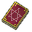 간디 오크 마법서 | 오크들이 사용하는 마법의 오랜 역사가 담긴 마법서. 오크의 마법을 연구하기 위해 화전민 마을의 오스가 이 마법서를 찾고 있습니다. | 0 | X | X |
| 간디의 토템 | 간디 오크의 토템으로, 화전민 마을의 라이라에게 가지고 가면 아데나를 받을 수 있습니다. | 0 | O | O |
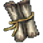 감사의 편지 | 저주로 해골이 된 짐이 감사의 마음을 담아서 남긴 편지. 은기사 마을의 게라드에게 가져가면 희생과 헌신의 증표로써 인정해 줄 것입니다. | 0 | X | X |
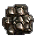 강철 원석 | — | 0 | O | O |
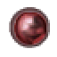 검은 혈흔 | — | 0 | O | O |
| 결혼 반지 | — | 1 | O | O |
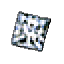 고급 다이아몬드 | — | 0 | O | O |
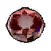 고급 루비 | — | 0 | O | O |
| 고급 사파이어 | — | 0 | O | O |
| 고급 에메랄드 | — | 0 | O | O |
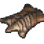 고급피혁 | — | 0 | O | O |
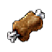 고기 | 먹으면 배가 불러집니다. 배가 고프면 체력이 회복되지 않습니다. | 10 | O | O |
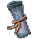 고대의 주문서 | — | 5 | O | O |
| 골렘의 심장 | — | 0 | O | O |
| 괴물 눈 고기 | 괴물눈의 두꺼운 껍질 안에 있는 부드러운 살. 주로 마법 재료로 사용되며, 먹으면 오감을 예민하게 해 주는 능력이 있습니다. | 10 | O | O |
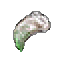 구울의 손톱 | 몸을 마비시키는 독이 발린 손톱. 말하는 섬의 젬은 영혼 마법의 비밀을 연구하기 위해 이 재료를 기다리고 있습니다. | 0 | X | X |
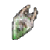 구울의 이빨 | 썩은 사체 조각이 끼어 있어, 물린 자에게 마비를 일으키는 이빨. 말하는 섬의 젬은 영혼 마법의 비밀을 연구하기 위해 이 재료를 기다리고 있습니다. | 0 | X | X |
| 글루디오 영지행 배표 | 말하는 섬 선착장에서 배를 타기 위해 필요한 표입니다. | 1 | O | O |
| 금빛 열쇠 | 말하는 섬 던전 2층의 봉인된 그곳을 열 수 있는 열쇠입니다. | 3 | O | O |
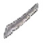 날이 빠진 무기 | — | 60 | O | O |
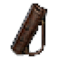 낡은 가죽 화살통 | 질긴 가죽으로 만든 화살통입니다. 소지 시 들고 있는 화살의 무게가 조금 가볍게 느껴집니다., 화살 소지 무게 감소 150 | 1 | X | O |
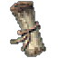 낡은 거래 문서 | 대장장이 아논이 과거 반왕 세력에 협력하던 시절 흑기사들과 거래할 때 사용한 장부. 반왕 세력의 무기 제조술을 알아내기 위해 은기사 마을의 대장장이 아논이 이 문서를 찾고 있습니다. | 0 | X | X |
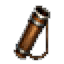 낡은 수렵꾼의 화살통 | 오랜 사냥을 위해 만들어진 튼튼한 화살통입니다. 소지 시 들고 있는 화살의 무게가 조금 가볍게 느껴집니다., 화살 소지 무게 감소 300 | 1 | X | O |
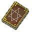 네루가 오크 마법서 | 오크들이 사용하는 마법의 오랜 역사가 담긴 마법서. 오크의 마법을 연구하기 위해 화전민 마을의 오스가 이 마법서를 찾고 있습니다. | 0 | X | X |
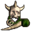 네루가의 토템 | 네루가 오크의 토템으로, 화전민 마을의 라이라에게 가지고 가면 아데나를 받을 수 있습니다. | 0 | O | O |
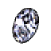 다이아몬드 | — | 0 | O | O |
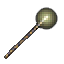 단풍나무 막대 | 사용하면 임의의 몬스터로 변신합니다. '변신 조종 반지'와 함께 사용하면 자신의 캐릭터를 원하는 몬스터로 변신시킬 수 있습니다., 지속시간 +7200초 | 7 | O | O |
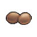 달걀 | — | 1 | O | O |
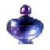 달빛의 정기 | 상아탑 달빛을 머금고 응축된 정기. | 0 | O | O |
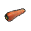 당근 | — | 2 | O | O |
| 소매치기가 훔쳐간 귀중품으로, 기란 마을의 이올라가 애타게 찾고 있습니다. | 0 | X | X | |
| 소매치기가 훔쳐간 귀중품으로, 기란 마을의 이올라가 애타게 찾고 있습니다. | 0 | X | X | |
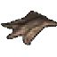 동물가죽 | — | 0 | O | O |
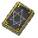 두다 마라 오크 마법서 | 오크들이 사용하는 마법의 오랜 역사가 담긴 마법서. 오크의 마법을 연구하기 위해 화전민 마을의 오스가 이 마법서를 찾고 있습니다. | 0 | X | X |
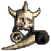 두다-마라의 토템 | 두다-마라 오크의 토템으로, 화전민 마을의 라이라에게 가지고 가면 아데나를 받을 수 있습니다. | 0 | O | O |
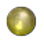 드레이크의 심장 | — | 0 | O | O |
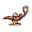 등잔 | — | 20 | O | O |
| 라미아 방 열쇠 | 게라드가 시련을 위해 가두어 놓은 라미아 우두머리의 방을 여는 열쇠. 게라드의 시련을 무사히 마쳤다면, 더는 가지고 있을 필요가 없습니다. | 0 | X | X |
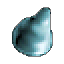 라미아의 비늘 | 라미아 우두머리의 몸에서 떨어져 나온 푸른 비늘. 은기사 마을의 게라드에게 가져가면 그의 시련을 통과할 수 있습니다. | 0 | X | X |
| 랜턴 | 랜턴을 사용하면 어두운 곳에서도 주변을 볼 수 있습니다. | 30 | O | O |
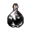 랜턴용 기름 | — | 0 | O | O |
| 레몬 | — | 2 | O | O |
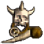 로바의 토템 | 로바 오크의 토템으로, 화전민 마을의 라이라에게 가지고 가면 아데나를 받을 수 있습니다. | 0 | O | O |
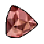 루비 | — | 0 | O | O |
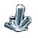 마력의 돌 | — | 2 | O | O |
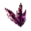 마물의 기운 | — | 60 | O | O |
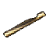 마법의 플룻 | 판의 근처에서 이 플룻으로 연주를 하면 판이 다가옵니다. | 8 | O | O |
| 마법인형:눈사람 | 근거리 대미지 +1, 근거리 명중 +1, 지속시간 +1800초 | 1 | O | O |
| 마법인형:늑대인간 | 근거리 대미지 +1, 원거리 대미지 +1, 지속시간 +1800초 | 1 | O | O |
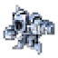 마법인형:다이아몬드 골렘 | 대미지 감소 +2, 지속시간 +1800초 | 1 | O | O |
| 마법인형:돌 골렘 | 지속시간 +1800초, 최대 HP +50 | 1 | O | O |
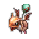 마법인형:드레이크 | 원거리 대미지 +2, 원거리 명중 +2, 지속시간 +1800초 | 1 | O | O |
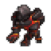 마법인형:라바 골렘 | 대미지 감소 +1, 지속시간 +1800초 | 1 | O | O |
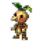 마법인형:목각 | 지속시간 +1800초, 최대 MP +30 | 1 | O | O |
| 마법인형:버그베어 | 무게추가 +200, 지속시간 +1800초 | 1 | O | O |
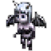 마법인형:서큐버스 | 64초마다 MP회복 +15, 지속시간 +1800초 | 1 | O | O |
| 마법인형:서큐버스 퀸 | 64초마다 MP회복 +15, SP +1, 지속시간 +1800초 | 1 | O | O |
| 마법인형:에티 | 방어력 -1, 지속시간 +1800초 | 1 | O | O |
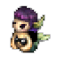 마법인형:인어 | 방어력 -2, 지속시간 +1800초, 최대 HP +30 | 1 | O | O |
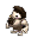 마법인형:자이언트 | 방어력 -3, 지속시간 +1800초, 최대 HP +50, 최대 MP +20 | 1 | O | O |
| 마법인형:장로 | 64초마다 MP회복 +6, SP +1, 지속시간 +1800초 | 1 | O | O |
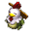 마법인형:코카트리스 | 원거리 대미지 +1, 원거리 명중 +1, 지속시간 +1800초 | 1 | O | O |
| 마법인형:크러스트시안 | 근거리 명중 +1, 원거리 명중 +1, 지속시간 +1800초 | 1 | O | O |
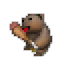 마법인형:킹 버그베어 | 근거리 대미지 +2, 근거리 명중 +2, 지속시간 +1800초 | 1 | O | O |
| 마법인형:흑장로 | 64초마다 MP회복 +15, 발동 : 콜 라이트닝, 지속시간 +1800초 | 1 | O | O |
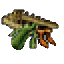 마을 주민들의 유품 | 변종 거대 여왕 개미의 배 속에서 발견된 유품. 우드벡 마을의 아리아는 개미굴에서 사라진 주민들과 아버지의 소식을 기다리고 있습니다. | 0 | X | X |
| 말하는 섬의 추억 | 말하는 섬을 다시 찾아주신 용사님들을 위해 준비한 메티스의 선물입니다. 소지 시 들고 있는 짐이 조금 가볍게 느껴집니다. | 1 | X | O |
| 말하는 섬행 배표 | 글루딘 마을 선착장에서 배를 타기 위해 필요한 표입니다. | 1 | O | O |
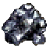 미스릴 | — | 0 | O | O |
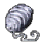 미스릴 실 | — | 0 | O | O |
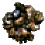 미스릴 원석 | — | 0 | O | O |
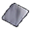 미스릴 판금 | — | 31 | O | O |
| 바나나 | — | 2 | O | O |
| 바실리스크의 비늘 | 바실리스크를 처치한 증표. 요정 숲의 숲과 요정의 어머니에게 자신의 기량을 증명하기 위한 물품 중 하나입니다. | 0 | X | X |
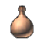 버섯포자의 즙 | 펑거스의 포자를 짜서 낸 즙입니다. 몇가지 마법이나 독의 원료로 쓰입니다. | 14 | O | O |
| 벨트 | — | 20 | O | O |
| 봉인 해제 주문서 상자 | 사용 시 봉인 해제 주문서 10장을 획득할 수 있습니다. 사용 가능 시간이 끝나기 전에 사용해야 합니다. | 100 | X | O |
| 봉인된 오만의 탑 11층 이동 부적 | — | 0 | O | O |
| 봉인된 오만의 탑 1층 이동 부적 | — | 0 | O | O |
| 봉인된 오만의 탑 21층 이동 부적 | — | 0 | O | O |
| 봉인된 오만의 탑 31층 이동 부적 | — | 0 | O | O |
| 불새의 심장 | — | 0 | O | O |
| 붉은 옷감 | — | 0 | O | O |
| 블랙 미스릴 | — | 0 | O | O |
| 블랙 미스릴 원석 | — | 0 | O | O |
| 블랙 미스릴 판금 | — | 0 | O | O |
| 비밀방 열쇠 | 글루디오 던전 깊숙한 곳, 마법사 오림 근처에서 사용할 수 있는 오래된 열쇠입니다. 비밀방에는 저주받은 자가 숨어 있다고 전해집니다. | 0 | X | X |
| 빛나는 비늘 | — | 0 | O | O |
| 뼈조각 | — | 0 | O | O |
| 사과 | — | 2 | O | O |
| 사이클롭스의 피 | 사이클롭스를 처치한 증표. 은기사 마을의 가죽 세공사 줄리에게 가져가면 특별한 장비를 제작할 수 있습니다. | 0 | X | X |
| 사탕 | — | 1 | O | O |
| 사파이어 | — | 0 | O | O |
| 생명의 비밀 | 돌 골렘 속에 숨겨져 있던 생명의 비밀이 적힌 주문서. 말하는 섬의 군터가 이 주문서를 기다리고 있습니다. | 0 | X | X |
| 서큐버스 퀸의 신비한 지팡이 | 일부 서큐버스 퀸이 소지하고 있는 특수 지팡이. 말하는 섬의 젬은 효율적인 마나 회복 방법을 연구하기 위해 이 재료를 기다리고 있습니다. | 0 | X | X |
| 셸로브 발톱 | 흠집 하나 없는 셸로브 발톱. 노련한 검술과 절제된 마음가짐으로 맞선 자만이 손에 넣을 수 있는 사냥의 증표입니다. 말하는 섬의 군터에게 가져가면 그의 시련을 통과할 수 있습니다. | 0 | X | X |
| 소나무 막대 | 사용하면 임의의 몬스터를 만들어냅니다. 어떤 몬스터들은 막대를 사용해도 만들어지지 않습니다. | 7 | O | O |
| 소환석 | 보랏빛 보석에서 희미한 빛이 일정한 간격으로 반짝입니다. 어딘가에 있는 마법인형의 기운과 공명하는 듯합니다. | 0 | O | O |
| 속죄의 성서 | 속죄의 문구가 쓰여져 있는 성서. 평화의 신녀를 통해 낭독할 수 있다. | 0 | X | O |
| 속죄의 성서 상자 | 사용 시 속죄의 성서를 10장 획득할 수 있습니다. | 0 | O | O |
| 수룡 비늘 | — | 7 | O | O |
| 수색문서 | 흑기사 수색대가 켄트성 주변을 정찰하고 남긴 문서. 켄트성 마을의 제로가 이 문서를 기다리고 있습니다. | 0 | X | X |
| 숫돌 | 무기나 방어구의 손상도를 회복시키는 아이템입니다. | 3 | O | O |
| 신비한 마나 회복 물약 | 오림이 판매하는 특수 물약. 말하는 섬의 젬은 효율적인 마나 회복 방법을 연구하기 위해 이 재료를 기다리고 있습니다. | 0 | X | X |
| 신비한 수정구 | 글루디오 던전의 오림에게 얻은 마력이 응축된 수정구. 말하는 섬의 게렝에게 가져가면 신비한 지팡이를 완성하는데 사용할 수 있습니다. | 0 | X | X |
| 신비한 지팡이 | 마력의 근원이 되는 신비한 수정구가 빠진 지팡이. 수정구를 구하려면 던전 깊숙한 곳에서 거래를 하는 마법사 오림을 찾아가야 합니다. | 0 | X | X |
| 신비한 지혜의 물약 | 일부 장로가 소지하고 있는 특수 물약. 말하는 섬의 젬은 효율적인 마나 회복 방법을 연구하기 위해 이 재료를 기다리고 있습니다. | 0 | X | X |
| 신성한 유니콘의 뿔 | 새 뿔이 돋아나며 떨어진 신성한 유니콘의 흔적. | 0 | O | O |
| 실 | — | 0 | O | O |
| 아데나 | — | 0 | O | O |
| 아라크네의 거미줄 | — | 0 | O | O |
| 아라크네의 허물 | — | 7 | O | O |
| 아르카의 마법인형 주머니 | — | 0 | O | O |
| 아시타지오의 재 | — | 0 | O | O |
| 아투바 오크 마법서 | 오크들이 사용하는 마법의 오랜 역사가 담긴 마법서. 오크의 마법을 연구하기 위해 화전민 마을의 오스가 이 마법서를 찾고 있습니다. | 0 | X | X |
| 아투바의 토템 | 아투바 오크의 토템으로, 화전민 마을의 라이라에게 가지고 가면 아데나를 받을 수 있습니다. | 0 | O | O |
| 안타라스의 기억 | 안타라스를 쓰러뜨린 자의 기억. 최초의 안타라스 토벌자로서 이룩한 위대한 영예를 간직하고 있습니다., 땅 속성 저항력 증가 +5 | 0 | X | X |
| 양초 | — | 2 | O | O |
| 언데드의 뼈 | 부활 중인 데스나이트의 뼈를 훔쳐 도망친 언데드의 배신자가 남긴 뼈. 말하는 섬의 게렝이 연구를 완성하기 위해 이것을 찾고 있습니다. | 0 | X | X |
| 언데드의 열쇠 | 언데드의 던전 안의 마법으로 봉인된 문을 열기 위해 필요한 열쇠. 언데드의 던전은 말하는 섬 던전 1층의 디롱에게 말을 걸면 들어갈 수 있습니다. 게렝의 의뢰를 무사히 마쳤다면, 더는 가지고 있을 필요가 없습니다. | 0 | X | X |
| 얼음여왕의 심장 | — | 0 | O | O |
| 에메랄드 | — | 0 | O | O |
| 엔트의 껍질 | — | 3 | O | O |
| 엘릭서 선택 상자 | 사용 시 엘릭서 6종 중 1종 선택 획득 가능한 상자 | 0 | O | O |
| 오렌지 | — | 2 | O | O |
| 오리하루콘 | 페어리 퀸이 만들어주는 고귀한 금속입니다. 손상된 무기나 방어구에 사용하면 일정한 확률로 손상도를 줄일 수 있습니다. | 0 | O | O |
| 오리하루콘 판금 | — | 14 | O | O |
| 오만의 탑 11층 이동 부적 | — | 10 | X | O |
| 오만의 탑 1층 이동 부적 | — | 10 | X | O |
| 오만의 탑 21층 이동 부적 | — | 10 | X | O |
| 오만의 탑 31층 이동 부적 | — | 10 | X | O |
| 오염된 정령의 수정(땅) | 오염된 땅의 정령을 처치한 증표. 요정 숲의 숲과 요정의 어머니에게 자신의 기량을 증명하기 위한 물품 중 하나입니다. | 0 | X | X |
| 오염된 정령의 수정(물) | 오염된 물의 정령을 처치한 증표. 요정 숲의 숲과 요정의 어머니에게 자신의 기량을 증명하기 위한 물품 중 하나입니다. | 0 | X | X |
| 오염된 정령의 수정(바람) | 오염된 바람의 정령을 처치한 증표. 요정 숲의 숲과 요정의 어머니에게 자신의 기량을 증명하기 위한 물품 중 하나입니다. | 0 | X | X |
| 오염된 정령의 수정(불) | 오염된 불의 정령을 처치한 증표. 요정 숲의 숲과 요정의 어머니에게 자신의 기량을 증명하기 위한 물품 중 하나입니다. | 0 | X | X |
| 오우거의 피 | 오우거의 피입니다. 오우거의 강력한 힘의 원천이라 알려져 있습니다. | 0 | O | O |
| 완성된 보물지도 | 드레이크의 서명이 되어있는 보물지도. 이 보물지도를 던전 어딘가에서 사용하면 숨겨진 방으로 갈 수 있을 것 같다. | 10 | X | O |
| 은회색 열쇠 | 말하는 섬 던전 2층의 봉인된 그곳을 열 수 있는 열쇠입니다. | 3 | O | O |
| 잊혀진 섬의 추억 | 잊혀진 섬을 향한 항로가 기록되어있는 책입니다. 소지 시 들고 있는 짐이 조금 가볍게 느껴집니다. | 1 | X | O |
| 저주 받은 정령서 | 다크엘프 마법사 다크마르가 요정 숲에서 훔쳐간 정령서. 요정 숲의 숲과 요정의 어머니는 정령서가 다시 회수되기를 바라고 있습니다. | 0 | X | X |
| 정령옥 | — | 0 | O | O |
| 정령의 돌 | — | 0 | O | O |
| 좀비 열쇠 | 언데드의 던전 안의 마법으로 봉인된 문을 열기 위해 필요한 열쇠. 게렝의 의뢰를 무사히 마쳤다면, 더는 가지고 있을 필요가 없습니다. | 0 | X | X |
| 종이 전령새 | 사용하여 부정한 자의 이름을 새기면 진실을 캐는 자에게 전달됩니다. | 0 | X | X |
| 종이 전령새 상자 | — | 1 | X | X |
| 지룡 비늘 | — | 7 | O | O |
| 철괴 | — | 0 | O | O |
| 최고급 다이아몬드 | — | 0 | O | O |
| 최고급 루비 | — | 0 | O | O |
| 최고급 사파이어 | — | 0 | O | O |
| 최고급 에메랄드 | — | 0 | O | O |
| 케플리샤의 기억 저장 구슬 | 내 기억을 구슬에 담을 수 있습니다. | 0 | O | O |
| 터틀 드래곤의 껍질 | 터틀 드래곤의 거대한 껍질로 수십 년을 버텨온 방어의 상징. 가공이 어려워 은기사 마을의 대장장이 아논만이 장비 제작에 사용할 수 있습니다. | 0 | X | X |
| 파란 옷감 | — | 0 | O | O |
| 판의 갈기털 | — | 1 | O | O |
| 팬케익 | — | 2 | O | O |
| 페어리 더스트 | — | 0 | O | O |
| 펫 목걸이 | 길들인 펫의 주인임을 표시하는 목걸이입니다. 이것을 서로 교환하면 펫을 교환할 수 있습니다. | 5 | O | O |
| 펫 호루라기 | 호루라기를 불면 길들인 펫이 자신의 주위로 모여듭니다. | 8 | O | O |
| 편지지 | — | 0 | O | O |
| 푸른 도마뱀의 껍질 | 블루 테일의 가죽. 섬세하게 손질된 푸른 광택을 띠는 도마뱀의 가죽이다. | 0 | O | O |
| 풍룡 비늘 | — | 7 | O | O |
| 퓨어 엘릭서 | 엘릭서 제작에 필요한 재료 아이템. | 0 | O | O |
| 픽시의 깃털 | 특별한 혜택을 받고 있는 용사에게 지급되는 특별한 아이템입니다. | 0 | X | X |
| 하얀 옷감 | — | 0 | O | O |
| 해골 열쇠 | 언데드의 던전 안의 마법으로 봉인된 문을 열기 위해 필요한 열쇠. 게렝의 의뢰를 무사히 마쳤다면, 더는 가지고 있을 필요가 없습니다. | 0 | X | X |
| 해골의 두개골 | 해골의 몸에서 떨어져 나온, 달그락거리는 머리뼈. 희미한 저주가 남아 있어 가까이하면 기이한 환청이 들리기도 합니다. 말하는 섬의 젬에게 이것을 가져가면 저주받은 마법서에 마력을 불어넣어 줄 수 있습니다. | 0 | X | X |
| 혈맹 편지지 | 혈맹원 모두에게 동시에 같은 내용의 편지를 보내는 마법 편지지입니다. | 0 | O | O |
| 화룡 비늘 | — | 7 | O | O |
| 환생의 물약 | 붉은 기사에게 단 하나만 주어지는 특별한 물약. 악의 신 그랑카인의 저주마저 풀어낼 만큼 강력한 힘을 지니고 있습니다. 진정한 붉은 기사는 이 물약을 자신보다 더 절실한 이에게 기꺼이 내어줄 수 있어야 합니다. | 0 | X | X |
| 회상의 촛불 | — | 1 | X | O |
| 회상의 촛불 | — | 1 | X | O |
| 흑기사의 서약서 | 반왕의 조직에 절대적인 충성을 맹세한 증거. 반왕의 계획이 적혀 있기 때문에 은기사 마을의 리키가 이 서약서를 찾고 있습니다. | 0 | X | X |
| 흑단 막대 | 사용하면 번개를 소환하여 적을 공격할 수 있습니다. | 7 | O | O |
주문서20
| 아이템 | 효과 | 무게 | 교환 | 창고 |
|---|---|---|---|---|
| 갑옷 마법 주문서 | 갑옷에 마법을 부여하여 보다 높은 방어력을 얻을 수 있습니다. 단, 저주받은 경우 방어력을 약화시킬 수 있습니다. | 0 | O | O |
| 귀환 주문서 | 사용하면 가장 가까운 마을로 텔레포트합니다. | 0 | O | O |
| 무기 마법 주문서 | 무기에 마법을 부여하여 보다 강력하게 합니다. 단, 저주받은 경우 공격력을 약화시킬 수 있습니다. | 0 | O | O |
| 변신 주문서 | 자신이 원하는 몬스터로 변신할 수 있도록 해주는 주문서입니다. 단 변신 지속 시간은 20~30분에 불과합니다., 지속시간 +1200초 | 0 | O | O |
| 봉인 해제 주문서 | 봉인된 아이템의 봉인을 해제할 수 있습니다. 사용 가능 시간이 끝나기 전에 사용해야 합니다. | 0 | X | O |
| 부활 주문서 | 죽은 사람이나 펫, 죽은 괴물 등을 부활시킵니다. | 0 | O | O |
| 빈 주문서(레벨 1) | — | 0 | O | O |
| 빈 주문서(레벨 2) | — | 0 | O | O |
| 빈 주문서(레벨 3) | — | 0 | O | O |
| 빈 주문서(레벨 4) | — | 0 | O | O |
| 순간이동 주문서 | 사용하면 임의의 장소로 텔레포트합니다. '순간 이동 조종 반지'와 함께 사용하면 자신이 가고싶은 곳으로 텔레포트할 수 있습니다. 축복받은 주문서의 경우에는 '순간 이동 조종반지'가 없어도 기억된 곳으로 텔레포트가 가능합니다. | 0 | O | O |
| 오만의 탑 11층 이동 주문서 | — | 0 | O | O |
| 오만의 탑 1층 이동 주문서 | — | 0 | O | O |
| 오만의 탑 21층 이동 주문서 | — | 0 | O | O |
| 오만의 탑 31층 이동 주문서 | — | 0 | O | O |
| 원주민 토템 | — | 0 | O | O |
| 저주 풀기 주문서 | 사용하면 착용한 아이템에 걸린 저주를 풀어줍니다. | 0 | O | O |
| 페어리의 날개 | 페어리들의 경화된 날개입니다. 사용하면 가장 가까운 마을로 텔레포트 합니다. | 7 | O | O |
| 혈맹 귀환 주문서 | 성이나 아지트를 소유한 혈맹원이 사용하면 해당 되는 곳으로 텔레포트합니다. | 0 | O | O |
| 확인 주문서 | 사용한 뒤 아이템을 누르면 해당 아이템의 능력을 알 수 있습니다. | 0 | O | O |
물약22
| 아이템 | 효과 | 무게 | 교환 | 창고 |
|---|---|---|---|---|
| 강화 초록 물약 | 지속시간 +1800초 | 14 | O | O |
| 맑은 물약 | 마시면 체력이 상당히 회복됩니다., 회복량 44~107 | 8 | O | O |
| 불투명 물약 | 마시면 일정 시간동안 눈이 멀게 됩니다. 하지만 쳐다보면 해가 되는 각종 위험으로부터 마신 사람을 지켜주기도 합니다. | 15 | O | O |
| 비취 물약 | 온갖 독을 치료해 주는 물약입니다. | 7 | O | O |
| 빨간 물약 | 마시면 체력이 조금 회복됩니다., 회복량 6~27 | 5 | O | O |
| 악마의 피 | 마시면 악마의 기운이 마음속 깊은 곳에 스며들며, 광폭한 기운을 일으켜 일정 시간동안 보다 빠르게 행동하게 됩니다., 지속시간 +600초 | 3 | O | O |
| 에바의 축복 | 에바의 축복이 깃들어 물 속에서도 숨을 쉴 수 있게 됩니다., 지속시간 +1800초 | 2 | O | O |
| 엔트의 열매 | 요정의 숲 수호자의 하나인 엔트의 열매입니다. 먹으면 체력이 크게 회복됩니다., 회복량 44~107 | 5 | O | O |
| 엔트의 줄기 | 요정의 숲의 수호자 중 하나인 엔트의 줄기입니다. 치료 성분이 있어 먹으면 모든 종류의 독에 효과가 있습니다. | 0 | O | O |
| 엘릭서(CHA) | — | 20 | O | O |
| 엘릭서(CON) | — | 20 | O | O |
| 엘릭서(DEX) | — | 20 | O | O |
| 엘릭서(INT) | — | 20 | O | O |
| 엘릭서(STR) | — | 20 | O | O |
| 엘릭서(WIS) | — | 20 | O | O |
| 엘븐 와퍼 | 먹으면 온 몸이 활력으로 가득 차서 일정 시간 동안 모든 동작이 빨라집니다. 이 음식은 요정에게만 효과가 있습니다., 지속시간 +480초 | 4 | O | O |
| 용기의 물약 | 마시면 마음속 깊은 곳으로부터 용기가 솟아 일정 시간동안 빠르게 움직이게 됩니다., 지속시간 +300초 | 9 | O | O |
| 인어의 비늘 | 물 속에서도 숨을 쉴 수 있게 됩니다., 지속시간 +600초 | 3 | O | O |
| 주홍 물약 | 마시면 체력이 조금 더 회복됩니다., 회복량 26~68 | 7 | O | O |
| 지혜의 물약 | 마시면 마음이 잔잔해지며 집중력이 높아져 마법을 사용할 때 보다 큰 효과가 나도록 해 줍니다. 이 물약은 마법사에게만 효과가 있습니다., SP +2, 지속시간 +300초 | 1200 | O | O |
| 초록 물약 | 마시면 일정 시간동안 몸이 빨리 움직입니다., 지속시간 +300초 | 4 | O | O |
| 파란 물약 | — | 7 | O | O |
마법서110
| 아이템 | 효과 | 무게 | 교환 | 창고 |
|---|---|---|---|---|
| 기술서 (리덕션 아머) | — | 7 | O | O |
| 기술서 (바운스 어택) | — | 7 | O | O |
| 기술서 (솔리드 캐리지) | — | 7 | O | O |
| 기술서 (쇼크 스턴) | — | 7 | O | O |
| 기술서 (카운터 배리어) | — | 7 | O | O |
| 마법서 (그레이터 헤이스트) | — | 7 | O | O |
| 마법서 (그레이터 힐) | — | 7 | O | O |
| 마법서 (글로잉 오라) | — | 7 | X | O |
| 마법서 (다크니스) | — | 7 | O | O |
| 마법서 (디지즈) | — | 7 | O | O |
| 마법서 (디케이 포션) | — | 7 | O | O |
| 마법서 (디크리즈 웨이트) | — | 7 | O | O |
| 마법서 (디텍션) | — | 7 | O | O |
| 마법서 (라이트) | — | 7 | O | O |
| 마법서 (라이트닝 스톰) | — | 7 | O | O |
| 마법서 (라이트닝) | — | 7 | O | O |
| 마법서 (런 클랜) | — | 7 | X | O |
| 마법서 (리무브 커스) | — | 7 | O | O |
| 마법서 (리절렉션) | — | 7 | O | O |
| 마법서 (마나 드레인) | — | 7 | O | O |
| 마법서 (매스 텔레포트) | — | 7 | O | O |
| 마법서 (메디테이션) | — | 7 | O | O |
| 마법서 (미티어 스트라이크) | — | 7 | O | O |
| 마법서 (뱀파이어릭 터치) | — | 7 | O | O |
| 마법서 (버서커스) | — | 7 | O | O |
| 마법서 (브레이브 오라) | — | 7 | X | O |
| 마법서 (블레스 웨폰) | — | 7 | O | O |
| 마법서 (블레스드 아머) | — | 7 | O | O |
| 마법서 (블리자드) | — | 7 | O | O |
| 마법서 (사일런스) | — | 7 | O | O |
| 마법서 (서먼 몬스터) | — | 7 | O | O |
| 마법서 (선 버스트) | — | 7 | O | O |
| 마법서 (스탈락) | — | 7 | O | O |
| 마법서 (슬로우) | — | 7 | O | O |
| 마법서 (실드) | — | 7 | O | O |
| 마법서 (아이스 대거) | — | 7 | O | O |
| 마법서 (아이스 랜스) | — | 7 | O | O |
| 마법서 (어드밴스 스피릿) | — | 7 | O | O |
| 마법서 (어스 재일) | — | 7 | O | O |
| 마법서 (어스 퀘이크) | — | 7 | O | O |
| 마법서 (에너지 볼트) | — | 7 | O | O |
| 마법서 (웨폰 브레이크) | — | 7 | O | O |
| 마법서 (위크 엘리멘탈) | — | 7 | O | O |
| 마법서 (위크니스) | — | 7 | O | O |
| 마법서 (윈드 커터) | — | 7 | O | O |
| 마법서 (이럽션) | — | 7 | O | O |
| 마법서 (이뮨 투 함) | — | 7 | O | O |
| 마법서 (익스트라 힐) | — | 7 | O | O |
| 마법서 (인비지블리티) | — | 7 | O | O |
| 마법서 (인챈트 덱스터리티) | — | 7 | O | O |
| 마법서 (인챈트 마이티) | — | 7 | O | O |
| 마법서 (인챈트 웨폰) | — | 7 | O | O |
| 마법서 (칠 터치) | — | 7 | O | O |
| 마법서 (카운터 매직) | — | 7 | O | O |
| 마법서 (캔슬레이션) | — | 7 | O | O |
| 마법서 (커스: 블라인드) | — | 7 | O | O |
| 마법서 (커스: 패럴라이즈) | — | 7 | O | O |
| 마법서 (커스: 포이즌) | — | 7 | O | O |
| 마법서 (콘 오브 콜드) | — | 7 | O | O |
| 마법서 (콜 라이트닝) | — | 7 | O | O |
| 마법서 (콜 클랜) | — | 7 | O | O |
| 마법서 (큐어 포이즌) | — | 7 | O | O |
| 마법서 (크리에이트 좀비) | — | 7 | O | O |
| 마법서 (턴 언데드) | — | 7 | O | O |
| 마법서 (테이밍 몬스터) | — | 7 | O | O |
| 마법서 (텔레포트) | — | 7 | O | O |
| 마법서 (토네이도) | — | 7 | O | O |
| 마법서 (트루 타겟) | — | 7 | O | O |
| 마법서 (파이어 스톰) | — | 7 | O | O |
| 마법서 (파이어 애로우) | — | 7 | O | O |
| 마법서 (파이어볼) | — | 7 | O | O |
| 마법서 (포그 오브 슬리핑) | — | 7 | O | O |
| 마법서 (풀 힐) | — | 7 | O | O |
| 마법서 (프로즌 클라우드) | — | 7 | O | O |
| 마법서 (헤이스트) | — | 7 | O | O |
| 마법서 (홀리 워크) | — | 7 | O | O |
| 마법서 (홀리 웨폰) | — | 7 | O | O |
| 마법서 (힐 올) | — | 7 | O | O |
| 마법서 (힐) | — | 7 | O | O |
| 정령의 수정 (네이쳐스 블레싱) | — | 5 | O | O |
| 정령의 수정 (네이쳐스 터치) | — | 5 | O | O |
| 정령의 수정 (레지스트 매직) | — | 5 | O | O |
| 정령의 수정 (레지스트 엘리멘트) | — | 5 | O | O |
| 정령의 수정 (리턴 투 네이처) | — | 5 | O | O |
| 정령의 수정 (바디 투 마인드) | — | 5 | O | O |
| 정령의 수정 (버닝 웨폰) | — | 5 | O | O |
| 정령의 수정 (브레스 오브 파이어) | — | 5 | O | O |
| 정령의 수정 (블러드 투 소울) | — | 5 | O | O |
| 정령의 수정 (블레스 오브 어스) | — | 5 | O | O |
| 정령의 수정 (서먼 그레이터 엘리멘탈) | — | 5 | X | O |
| 정령의 수정 (서먼 레서 엘리멘탈) | — | 5 | O | O |
| 정령의 수정 (소울 오브 프레임) | — | 5 | O | O |
| 정령의 수정 (스톰 샷) | — | 5 | O | O |
| 정령의 수정 (스트라이커 게일) | — | 5 | O | O |
| 정령의 수정 (아이 오브 스톰) | — | 5 | O | O |
| 정령의 수정 (아이언 스킨) | — | 5 | O | O |
| 정령의 수정 (어스 바인드) | — | 5 | O | O |
| 정령의 수정 (어스 스킨) | — | 5 | O | O |
| 정령의 수정 (에어리어 오브 사일런스) | — | 5 | O | O |
| 정령의 수정 (워터 라이프) | — | 5 | O | O |
| 정령의 수정 (윈드 샷) | — | 5 | O | O |
| 정령의 수정 (윈드 워크) | — | 5 | O | O |
| 정령의 수정 (이레이즈 매직) | — | 5 | O | O |
| 정령의 수정 (인탱글) | — | 5 | O | O |
| 정령의 수정 (클리어 마인드) | — | 5 | O | O |
| 정령의 수정 (텔레포트 투 마더) | — | 5 | O | O |
| 정령의 수정 (트리플 애로우) | — | 5 | O | O |
| 정령의 수정 (파이어 웨폰) | — | 5 | O | O |
| 정령의 수정 (폴루트 워터) | — | 5 | O | O |
| 정령의 수정 (프로텍션 프롬 엘리멘트) | — | 5 | O | O |